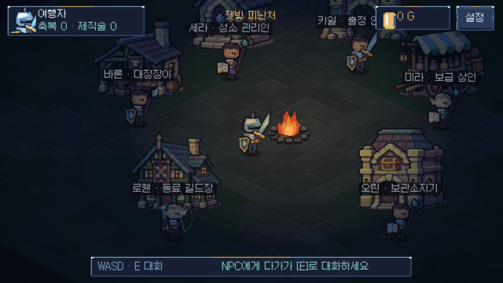
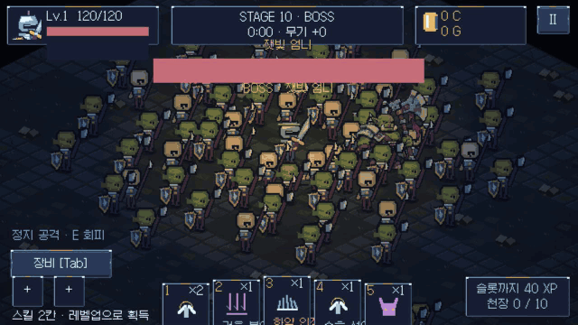

Tracefolio REPORTS & ISSUES
Tracefolio REPORTS & ISSUES 캠프 가디언작업 결과
캠프 가디언작업 결과첫 플레이 버전 중간 점검 — 지속 스폰·암흑 마을·운명의 슬롯 낙하
진행 중시간제 지속 스폰, 모닥불 조명과 카지노 등장 연출을 구현하고 실제 Godot 영상·GIF로 기록했습니다. 신규 무기·몬스터·손패는 추가 제작 중입니다.
작업 결과
진행 중인 첫 플레이 버전의 중간 기록입니다. 스플래시·이동형 마을·출정·성장 이벤트·10스테이지 보스·귀환 정산이 구현되어 있습니다. 이번 기록은 최신 대규모 콘텐츠 요청의 전체 완료를 의미하지 않습니다.
변경 내용
적용 내용
실제 화면과 연출


마을·보스 군집·슬롯·천사·악마·강화의 실제 Godot 렌더링 영상, MP4
장면은 QA 스크립트가 실제 게임 노드와 리소스를 구성한 재현 장면입니다. 보스·군집 배치와 전설 천장은 검토를 위해 고정했습니다. 일반 플레이 녹화와 구분하며 생성 시안이나 합성 UI로 대체하지 않았습니다. GIF는 무음이고 MP4에는 엔진의 오디오 출력이 포함됩니다.
적용 내용
- 스테이지당 전투 시간 40초, 지속 보충 스폰과 단계별 동시 생성 상한 50~120개체. 10스테이지 보스와 보조 몬스터. 처치만으로 스테이지가 넘어가지 않습니다.
- 정지 시 자동 공격, 이동 시 준비 공격 취소. 검의 범위 베기와 활의 가까운 세 대상 사격.
- 마을 중앙 모닥불, 따뜻한 중심광과 청흑색 외곽, 조명과 분리된 이름표·HUD.
- 슬롯머신 낙하·충격·순차 릴 정지, 카드 호버와 성공 컨페티. 천사·악마·강화의 서로 다른 등장 문양.
- 보스와 건물의 공통 팔레트·알파·잡픽셀 후처리. 보스 개별 프레임 128×128과 같은 발 기준점. 원본 생성 그림을 보존했습니다.
- 아수라장 26.22 자료를 참고한 증강 15종의 데이터와 효과. 신비한 주먹·흡혈·스킬 치명타·누적 가속 등을 우리 게임 수치로 조정했습니다.
- 처치 재화·경험치, 회복·자석·상자·장비 드롭. 드롭은 스테이지 전환만으로 지워지지 않습니다.
시간제 스폰의 핵심 함수
실제 expedition.gd의 함수입니다. 기존 전멸 후 다음 웨이브 호출을 막고 경과 시간과 생성 예산으로 전환했습니다.
func process_survival_spawns() -> void:
if wave<=0 or boss_dead_at>=0: return
var stage: Dictionary=campaign.data.config("stages")
enemies=enemies.filter(func(enemy): return enemy.hp>0 or clock<float(enemy.get("corpse_until",clock+1)))
if stage_ends_at>0 and clock>=stage_ends_at:
spawn_wave()
if clock>=next_spawn_at:
var progress: float=clampf(clock/float(stage.duration)/9.0,0,1)
var interval: float=lerpf(float(stage.spawn_interval),float(stage.late_spawn_interval),progress)
next_spawn_at=clock+interval*(1.6 if wave==10 else 1.0)
spawn_survival_pack(int(stage.spawn_pack)+int(wave/3))
flowchart LR
A[스테이지 시작] --> B[시간 경과와 생존 수 확인]
B --> C{생성 상한 미만}
C -->|예| D[화면 바깥에서 적 보충]
D --> B
C -->|아니오| B
B --> E{40초 경과}
E -->|예| F[다음 스테이지 또는 보스]
flowchart LR A[누적 경험치 도달] --> B[슬롯 자동 대기열] B --> C[머신 낙하와 착지] C --> D[릴 순차 정지] D --> E[결과 카드와 당첨 연출] E --> F[보상 선택 후 전투 재개]
대화 기록
사용자는 지속 스폰·어두운 다크 판타지·중앙 모닥불·슬롯 낙하와 과감한 연출을 요청했습니다. 이후 손패 카드, 다양한 무기·등급 장비·악마·천사·벌레·언데드·귀신, 고유 능력, 역동적 동작을 추가 요청했습니다. 새 콘텐츠와 기존 캐릭터는 우선 좌우 방향으로 통일하는 최신 요청을 반영하는 중입니다.
검증
Godot 4.7.2 헤드리스 캠페인 검사 123개 통과. 생존 스폰 및 증강 검사는 실패 목록 없이 통과했습니다. 에셋·오디오 검사 137개, 29개 효과음의 디코딩·피크·경계 검사가 통과했습니다. 생존 시뮬레이션은 검 10스테이지 격파(370.1초), 활 격파(363.9초)를 확인했습니다. 이는 고정 시드의 자동 조작 결과이며 사람의 난이도 평가나 프레임 성능 보증이 아닙니다. 영상은 실제 NVIDIA GTX 970의 Godot OpenGL 출력으로 Movie Maker 녹화를 수행했습니다. 음질의 실제 청감 승인은 미확인입니다. 이후 추가한 손패는 별도 기능 확인 중이며 위 검사를 완료 근거로 소급하지 않습니다.
남은 사항
제작 중: 손패 카드 8종의 최종 연결·소비·획득 확인, 추가 무기·스킬·등급 장비와 장착 인벤토리, 새 몬스터의 외형·고유 행동·소멸, 좌우 동작 개선, PixelFX 추가 연결, 최신 배포 파일 갱신. 최신 콘텐츠의 종합 QA와 후속 GIF/영상 기록은 남아 있습니다. 기존 Windows 파일은 이 기록 이후 변경을 모두 포함한 최신본이 아닙니다. 1,000스테이지·100개 보스 배치와 누적 10시간은 장기 목표이며 구현 완료로 표시하지 않습니다.
작업 시간
- 제안 시간: 전체 작업 최대 6시간: 2026-11-16 23:45 KST 시작, 2026-11-17 05:45 KST 이전 종료. 첫 중간 아카이브 02:30 KST 전후 목표.
- 실제로 완료된 시간: 중간 기록 작성: 2026-11-17 02:15:38 KST. 전체 작업 진행 중이며 최종 완료 시각은 미확정입니다.
- XERJ: 미사용 — 사용자 지침에 따라 rg로 프로젝트 소스와 기존 리소스를 확인했습니다.